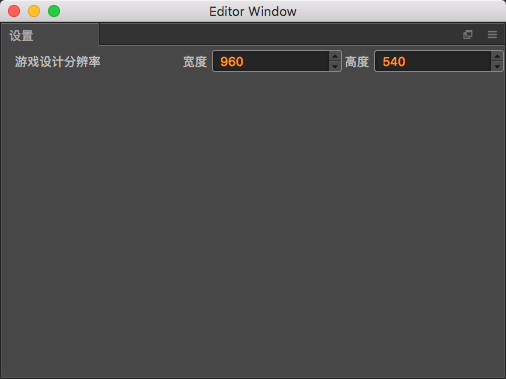

插件设置

在插件设置面板里面,提供了设置游戏设计分辨率
游戏设计分辨率:
因为游戏的运行环境千差万别,在不同的设备上运行显示的窗口大小也不一致,但是在游戏开发过程中,不可能为每套设备都开发一套资源,于是游戏设计分辨率这个概念就应运而生.
设定一个游戏设计分辨率,所有的作品都是在该分辨率下进行制作,创作者无需关心在其他设备上的适配情况,适配工作交给引擎完成.
当然这个设计分辨率也不是随心所欲设置的,这个值要考虑到市面上主流机型的分辨率,这样才能保证作品在主流机型上有一个比较好的效果,至于非主流机型,可能就要单独深入的做适配方案.